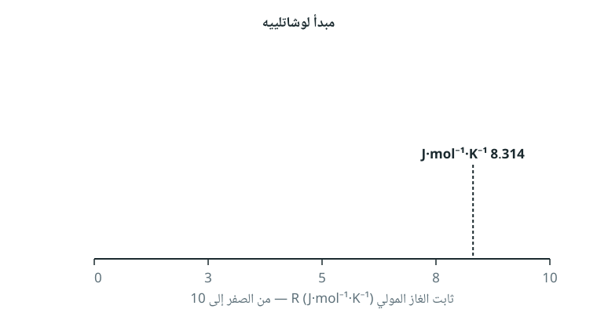

مبدأ لوشاتلييه
Le Chatelier's principle
مبدأ لوشاتلييه ينص على أن النظام في توازن كيميائي يقاوم أي تغيير يُفرض عليه فيزحف في الاتجاه الذي يقلل أثر ذلك التغيير، سواء كان التغيير في التركيز أو الضغط أو الحرارة.
مبدأ لوشاتلييه قاعدة نوعية لسلوك الأنظمة المتوازنة: إذا أُثر على نظام في توازن بتغيير أحد شروط توازنه — تركيز أو ضغط أو حجم أو حرارة — زحف التوازن في الاتجاه الذي يعارض التغيير ويخفف أثره. فإضافة مادة متفاعلة تدفع التفاعل إلى الأمام، ورفع الضغط يدفع نحو الجهة ذات الحجم الأقل، ورفع الحرارة يدفع نحو التفاعل الماص للحرارة. مثال: في تفاعل تكوين الأمونيا N₂ + 3H₂ ⇌ 2NH₃ بـΔH = −92.4 kJ/mol، رفع الضغط يزيد الناتج لأن أربعة مولات غاز تصير مولين، ورفع الحرارة ينقصه لأن التفاعل طارد للحرارة.
كيف تعمل الظاهرة؟
التوازن الكيميائي ليس سكوناً بل تساوي معدلين: التفاعل الأمامي والعكسي يجريان بالسرعة نفسها. وحين يُفرض تغيير، يختل هذا التساوي لحظياً، فيغلب أحد الاتجاهين حتى يعود التساوي عند تراكيز جديدة. فإضافة متفاعل تزيد معدل التفاعل الأمامي فوراً لأن تصادماته أكثر، فيستهلك جزء من المادة المضافة ويُنتج مزيد من النواتج. ورفع الضغط يزيد التراكيز كلها، لكن أثره في معدل التفاعل الأمامي والعكسي يختلف بحسب عدد المولات في كل جهة، فيغلب الاتجاه الذي يقلل عدد المولات. ورفع الحرارة يزيد معدلي الاتجاهين، لكنه يزيد معدل التفاعل الماص أكثر لأن طاقة تنشيطه أكبر، فيزحف نحوه.
العلاقة بالأرقام
حاصل التفاعل Q = Π(a_i)^ν_i، والتوازن عند Q = K. واعتماد K على T: d(ln K)/dT = ΔH°/(R·T²)، وبالتكامل ln(K₂/K₁) = −(ΔH°/R)(1/T₂ − 1/T₁). وأثر الضغط على الغازات: K_p = K_x·(p/p°)^Δn، فزيادة p تزيد K_x إذا كان Δn سالباً. مثال عددي: للأمونيا ΔH° = −92 400 J/mol، ومن 400 K إلى 500 K: ln(K₂/K₁) = −(−92 400/8.314 462 618)(1/500 − 1/400) = 11 113 × (−0.0005) = −5.556، أي K₂/K₁ = 0.00386 — فثابت التوازن ينهار إلى 0.4% عند رفع الحرارة مئة درجة، وهذا يوافق أن التفاعل طارد.
مفاهيم متقاربة
يُفرَّق بين ما يغيّر K وما يغيّر Q: الحرارة تغيّر K، والتركيز والضغط والحجم تغيّر Q فقط. ويُفرَّق بين الإزاحة والتغيير في المعدل: إضافة حفاز تزيد المعدل ولا تزيح التوازن. ويُفرَّق بين مبدأ لوشاتلييه وقاعدة فانت هوف: فانت هوف معادلة كمية تعطي مقدار تغيّر K، ولوشاتلييه قاعدة نوعية تعطي الاتجاه فقط. ويُفرَّق بين إضافة غاز خامل عند ثبات الحجم وإضافته عند ثبات الضغط: عند ثبات الحجم لا تتغير الضغوط الجزئية فلا إزاحة، وعند ثبات الضغط يزيد الحجم فتنقص الضغوط الجزئية فتزحف الجهة ذات المولات الأكثر.
حدود التطبيق
المبدأ تقريبي ولا يعطي مقداراً، وقد يخفق في أنظمة شديدة اللاتماثل أو قريبة من تغيّر طور. ولا ينطبق على الأنظمة المفتوحة التي تُضاف إليها المواد وتُسحب منها باستمرار، حيث لا يبلغ النظام توازناً أصلاً. ولا ينطبق على التفاعلات التي تتغير فيها الأنواع نفسها بتغير الظروف، كتفاعل ينتج نوعاً جديداً عند ضغط عالٍ. وأخيراً لا يقول شيئاً عن السرعة: نظام قد يزحف إلى توازن جديد في أجزاء من الثانية أو في سنوات، والمبدأ صامت عن الزمن.

| الكمية | القيمة | المصدر |
|---|---|---|
| ثابت الغاز المولي R | 8.314 462 618 J·mol⁻¹·K⁻¹ | [1] |
| Δn الغازي في تفاعل الأمونيا | −2 مول | [3] |
المصادر
- 1 CODATA Value: molar gas constant — NIST — CODATA 2022 recommended values (2024). physics.nist.gov/cgi-bin/cuu/Value?r · اطُّلع عليه 2026-11-21
- 2 CODATA Value: Boltzmann constant — NIST — CODATA 2022 recommended values (2024). physics.nist.gov/cgi-bin/cuu/Value?k · اطُّلع عليه 2026-11-21
- 3 The International System of Units (SI), 9th edition (2019) — BIPM — Bureau International des Poids et Mesures (2019). www.bipm.org/en/publications/si-brochure · اطُّلع عليه 2026-11-21
استشهد بهذا المصطلح
الصيغتان مبنيتان من بيانات الصفحة نفسها: العنوان والتاريخ ورابط النسخة المنشورة.
مبدأ لوشاتلييه — Le Chatelier's principle. (2026). ديوان المعرفة — انفراد. https://infiradev.com/diwan/terms/term-le-chatelier.html
@misc{term-le-chatelier2026,
title = {مبدأ لوشاتلييه},
titleaddon = {Le Chatelier's principle},
howpublished = {{ديوان المعرفة — انفراد} — مرجع علمي عربي},
year = {2026},
url = {https://infiradev.com/diwan/terms/term-le-chatelier.html},
urldate = {2026-11-26},
note = {مراجعة علمية: hermes (مراجعة معتمدة 2026-11-26)}
}
راجعه: hermes (مراجعة معتمدة 2026-11-26) · 2026-11-26 · آخر تحديث 2026-11-21